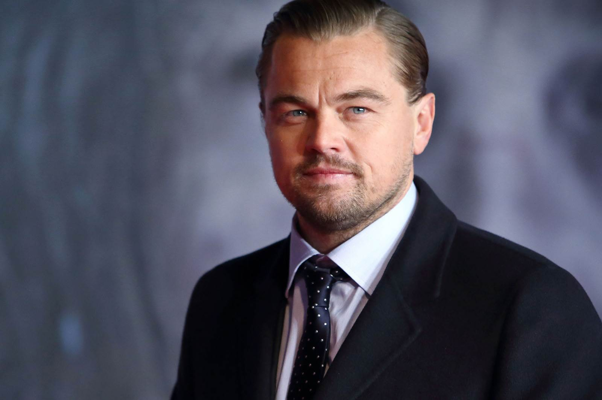
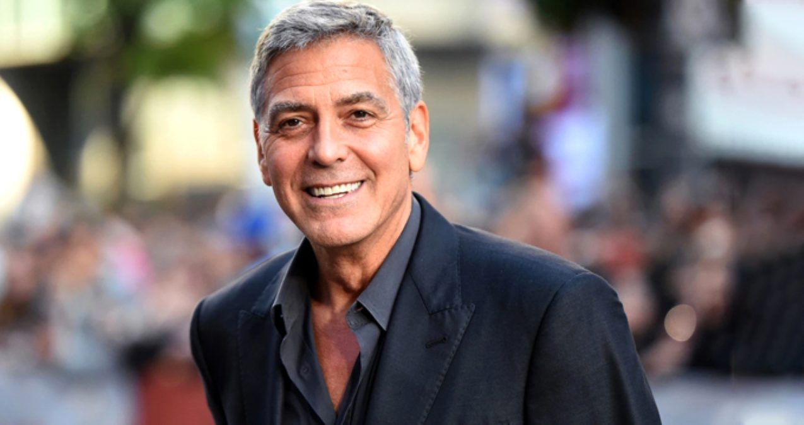

Известни личности
Леонардо ди Каприо · Джордж Клуни
Леонардо ди Каприо

Биография
Леонардо Вилхелм ди Каприо е американски актьор и продуцент, роден в Лос Анджелис, Калифорния. Започва кариерата си с реклами и телевизионни роли. Получава първата си номинация за „Оскар“ за „Защо тъгува Гилбърт Грейп“ (1993), а „Титаник“ (1997) го превръща в световна звезда. Работи многократно с режисьора Мартин Скорсезе. През 2016 г. печели „Оскар“ за най-добра главна мъжка роля за „Завръщането“. Известен е и с дейността си за опазване на околната среда.
Роден:
Цитат
„Изменението на климата е реално. То се случва точно сега.“
Превод от речта му при получаването на „Оскар“ през 2016 г.
Филмография
- Титаник (Titanic) — 1997 г.
- Хвани ме, ако можеш (Catch Me If You Can) — 2002 г.
- Генезис (Inception) — 2010 г.
- Вълкът от Уолстрийт (The Wolf of Wall Street) — 2013 г.
- Завръщането (The Revenant) — 2015 г.
Биография и филми: Encyclopaedia Britannica.
Джордж Клуни

Биография
Джордж Тимъти Клуни е американски актьор, режисьор и продуцент, роден в Лексингтън, Кентъки. Става широко известен с ролята на д-р Дъг Рос в сериала „Спешно отделение“. След успеха си в телевизията се утвърждава в киното с филми като „Бандата на Оушън“ и „Сириана“. Получава „Оскар“ за поддържаща мъжка роля в „Сириана“ през 2006 г. и втори „Оскар“ като продуцент на „Арго“ през 2013 г. Участва и в хуманитарни инициативи.
Роден:
Цитат
„Ние сме тези, които говореха за СПИН, когато за него се говореше само шепнешком.“
Превод от речта му при получаването на „Оскар“ през 2006 г., в която говори за обществената роля на киното.
Филмография
- Филми
- От здрач до зори (From Dusk Till Dawn) — 1996 г.
- Бандата на Оушън (Ocean’s Eleven) — 2001 г.
- Сириана (Syriana) — 2005 г.
- Майкъл Клейтън (Michael Clayton) — 2007 г.
- Високо в небето (Up in the Air) — 2009 г.
- Гравитация (Gravity) — 2013 г.
- Сериали
- Спешно отделение (ER) — основна роля през 1994–1999 г.; гостувания през 2000 и 2009 г.
- Параграф 22 (Catch-22) — 2019 г.
Биография и филми: Encyclopaedia Britannica.